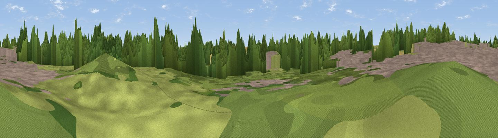

Clare Castle
#45667 in England · top 81% of its area beats it · near ClareWhere it is
The exact computed spot (TL 77038 45204). Click the marker for map links.
The view, rendered

A 360° render of this exact spot computed from the terrain model, tree cover and land cover — summer colours, afternoon light, calibrated against photographs of famous viewpoints. Real trees, hedges and buildings will differ in detail.
The panorama
Grey silhouette: terrain skyline in each direction (720 bearings, Earth curvature and refraction included). Dashed green: skyline with trees (+15 m) and buildings (+8 m) as obstacles. Blue strip: how far the ground is visible on each bearing.
Where the view opens
Wedge length = distance to the farthest visible ground on that bearing (vegetation-aware). Rings at 10, 25 and 50 km.
What fills the view
36% cropland · 33% woodland · 20% grassland · 11% built-up
Angular shares of the visible panorama (visual magnitude), not map area. Landscape diversity 0.56 (0–1 Shannon).
Key numbers
More beautiful places nearby
The staircase of upgrades: each row has a higher view potential than everything closer. Driving times are estimates from straight-line distance, calibrated against real road routing — check an actual route before setting out.
| Place | Direction | Drive | Score |
|---|---|---|---|
| Hundon Hill | NNW · 5 km | ~11 min | 29.8 |
| Viewpoint near Little Maplestead | SSE · 12 km | ~23 min | 30.3 |
| Viewpoint near Little Cornard | ESE · 14 km | ~25 min | 32.5 |
| Rivey Hill | W · 21 km | ~35 min | 43.1 |
| Viewpoint near Linton | W · 21 km | ~35 min | 48.0 |
| Viewpoint near Stapleford | WNW · 29 km | ~46 min | 54.8 |
| Viewpoint near Royston | W · 43 km | ~63 min | 56.6 |
| Viewpoint near Vange | S · 58 km | ~80 min | 58.2 |
52.07689, 0.58198 · source: osm peak · position refined by local search. Computed location — check access rights before visiting.